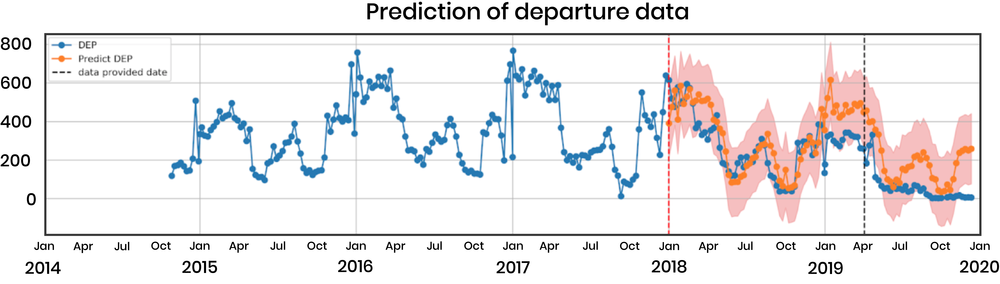
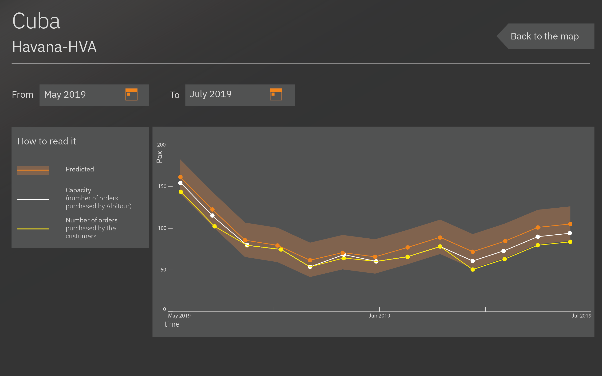

1.Introduction and scope
Alpitour is an Italian company that sells prepackaged holiday vacations across the globe. It was founded in 1947 in Italy as a small travel agent and it is today an international group with a turnover of 1,4 billion Euro, ranging from tour operating to hotel management, aviation and travel agencies. With a brand portfolio able to serve highly diversified customers by offering from travel packages to “made to measure” experiences, the Alpitour Group is ready to explore the opportunities of big-data society getting closer to travelers. The applied approach will focus on analyzing past travels package purchases by Alpitour customers during four years seasonality cycles.
The goal
Using Cuba as a case study, this project aims to use internal company booking data and external online/media information to build a predicting model for the future demand of orders and departures of Alpitour customers. Accurate predictions of orders and departures will allow Alpitour to better understand user patterns, capitalize on high predicted order/departure demand, and avoid overspending on planned trips when demand is low.
Deliverables
We identified two different figures inside the company that will make use of our predictive tool for the Cuba case and we developed two deliverables accordingly:
- A modular, documented software pipeline which goes through all the development stages, from data cleaning to the final prediction.It can be used by Alpitour data scientists/engineers to reproduce our results and to generalize the proposed approach to different destinations.
- A website to show our methodologies and results and an interactive dashboard to help the supply manager to make updated predictions for Cuba
2.Internal data preprocessing
We were given access to internal data of the company of the past four years regarding Cuba. Specifically:
Booking data from Italy to Cuba:
- Purchase date
- Departure date
- Number of passengers
- Age of person making booking
- Price of booking
- Destination city
- Travel agency (Alpitour or subsidiaries)
Google Ads information related to Cuba as a destination:
- Date
- Average page session time
- Number of passengers
Google Ads information related to Hotel Caraibi in Cuba:
- Date
- Average page session time
Page visits on Alpitour’s website:
- Number of sessions for each Alpitour page
- Bounce rate
- % of new sessions
- Transactions
- Revenue
Capacity per flight
- Date
- Airport
- Capacity
- Passengers
The data preprocessing stage can be summarized as follows:

Due to the sparsity of data of the datasets provided, we decided to use a timestep of a week, aggregating values referring to days of the same week.
Here we can see the plot of orders and departures from January 2014 to January 2019:

We also investigated the features of Alpitour customers:

3.External data retrieval
Italian Digital Media
One of the company’s requirement was to detect the most influential sources both in digital media and social media communities correlated to Alpitour customers behaviors in travel purchasing. Unfortunately, there were no free solutions to evaluate the impact of a topic (such as Cuba, in this case) or a hashtag over time on the most used social networks in Italy: Facebook and Instagram. For these reasons, we focused mainly on Italian digital media sources, since all the customers of the company are Italians.
One of the company’s requirement was to detect the most influential sources both in digital media and social media communities correlated to Alpitour customers behaviors in travel purchasing. Unfortunately, there were no free solutions to evaluate the impact of a topic (such as Cuba, in this case) or an hashtag over time on the most used social networks in Italy: Facebook and Instagram. For these reasons, we focused our attention on Italian digital media sources, since all the customers of the company are Italians. Here is a list of media sources suggested by Alpitour that we investigated. They can be divided into two different groups:
Travel Digital Media
- L’agenzia di viaggi
- Travel Quotidiano
- Turismo & Attualità
- Il giornale del turismo
- Webitmag
Consumer digital media
- Vanity Fair
- La Repubblica
- TravelGlobe
- Il giornale del turismo
- In Viaggio
Additionally, we built a scraping tool to extract news from the EMM (European Media Monitor), which is a news aggregator website. This tool increased dramatically the amount of Italian news per week retrieved.
Once we completed the scraping process, we had a dataset containing the following features for each article:
- Date
- Title (Italian)
- Corpus (Italian)
Using the Google Translate API we translated title and corpus in English and then we performed a sentiment analysis on both of them. Sentiment analysis is a Natural Language fy subjective information of the news. Specifically, for each text analyzed we had a correspondent value between [-1, 1] range:Processing technique which gives a systematic way to identify, extract, quanti
- -1: negative
- 0: neutral
- 1: positive
Google trends
In order to enrich our dataset, we also retrieved Google trends data of the past four years for general queries such as “Cuba travel” and “Cuba vacation” and for specfic queries regarding Alpitour’s hotels locations: “Cayo Largo”, “Holguin”... Grouping Google trends results per week gave us a plot which is highly correlated with the number of orders, as we can see from the image below:
Google Searches
Giving the promising results of Google trends data, we decided to move our analysis of Google data further and we built a scraping tool for Google search. For each week from January 2014 to April 2018, we retrieved the top 100 results of Google search for the query “Cuba” which were published in that specific week. In this way we were able to gather news, posts and reviews from Italian sources. This time, instead of applying a sentiment analysis on the scraped data we tried a different approach. First of all, we built a “ground truth” of travel-related websites performing a set of queries related to topics such as “travel”, “vacation” and so on. Then, for each week, we evaluated the weight of the portion of results which were published on travel-related sites. Specifically, we created two different features:
- Ratio: the percentage of results from travel sites over all the results
- Rank: summation of the reciprocal of the rank of travel sites
Unfortunately, the extracted features are noisy, and uncorrelated with respect to orders data, :( as we can see from the image below where they have been both normalized between 0 and 1.

4.Pipeline
Our first deliverable is a documented software pipeline which goes through all the development stages, from data cleaning to the final prediction. It is intended to be used by Alpitour data scientists/engineers to reproduce our results and to generalize the proposed approach to different destinations. Code and documentation can be found Here

The pipeline is made of three main stages as we can see from the picture above.
- Gather data: in this phase all the external data is collected and merged with the internal data provided by Alpitour
- Process data: data is then cleaned and then processed to generate visualizations and new features
- Model: processed data is used to fit our models and to make future predictions
Models
We explore both regression of future demand and binary classification of the direction of demand movement. Our most valuable contribution is an additive regression model
to predict time series results that will aid Alpitour supply managers in planning travel capacity.
The approach is articulated into different steps:
- Abstract seasonality: we used an additive model to decompose the target Y[t], where t denotes the time step. An example target is the number of future departures per week:
Y[t] = S[t] + T[t] + E[t] We reconstruct the target data Y[t] with the seasonality (S), trend (T), and residual (E). Here we can see a 52-week seasonality decomposition of departures per week:
Here we can see a 52-week seasonality decomposition of departures per week:

- Model trend: we modeled the trends with different regression model using useful features like booking data and external google search data.
-
Combine seasonality and trend: finally we added the two signals to obtain our final prediction.

We evaluated the performances of different regression models on validation set (2018) using a benchmark of predicting the mean departures:
Classification
In a first step, we modelled the problem as a classification problem. We classified the direction of average order demand per week in the next 1 to 3 months, reaching a final AUC values of 0.79.
Here we can see an example of how the data was labelled in order to fit and evaluate the classification models. This is referring to departures three months ahead:

Moving average convergence divergence (MACD) was used to capture the momentum in demand for each time step (week). Specifically:
- MACD line: MA(ORD,12) - MA(ORD,26)
- Signal line: MA(MACD, 9)
- Up: if MACD > Signal
5.Dashboard
The user
The Dashboard is one of the two final deliverables. The intended user of the dashboard is the supply manager of Alpitour. The skills of the Supply manager are:
- Managing the company supply chain by booking flights and hotels
- A strategic point of view, but no Knowledge of code
With the dashboard it will be possible to visualize the predictions of each airport served by Alpitour in Cuba
The deliverable
The Dashboard visualizes the predictions of the model with a trendline for each airport. The first screen shows the map of Cuba with all the airports that are used by Alpitour:
- Camagüey-CMW
- Havana-HVA
- Holguín-HOG
- Santa Clara-SNU
- Santiago de Cuba-SCU
- Varadero-VRO

The user can select the airport he wants to see and by clicking both on the map or on the buttons on the side of the screen. The airport selected will be highlighted in orange, in this case is the Havana one. The map will zoom on the airport selected.

By clicking on "see the data" it is possible to see in details the prediction for that airport. The orange line is the prediction given by the model up to one year in the future. The white line is the capacity, which is the number of plane reservations bought by Alpitour to be sold to the customers. The Yellow line shows the Number of orders already purchased by Alpitour’s customers. When the yellow line stops, it means that alpitour still has not started to sold the flights for that time of the year.

By using a calendar, it is possible to select the period of time, in months that the users wants to see in detail. In this case between May and July 2019. The trendline will adjust to the new period of time and will highlight the weeks.
By clicking on the trendline the user is able to see the details about a certain week:
- Week Selected
- Predicted passengers
- Capacity
- Orders purchased
 This video shows the interactions of the dashboard:
This video shows the interactions of the dashboard:
6.Conclusions and future work
In conclusion, we developed two main models:
- Additive model with a Gaussian process regression on the trend to predict the orders and departures per city in Cuba for up to a year in advance.
- Binary classification of average future weekly order demand (increase or decrease) using a fully-connected neural network.
In addition to these models, we provide the company with a generalized code repository that will be a pipeline for software engineers and data scientists to replicate our methodology and expand the predictive capability to different destinations. This is the result of our final prediction for L’Avana. Gaussian process regressor provides a confidence interval with upper and lower bounds for the predicted values. In this way, the supply manager can also take into account quantitatively the possible errors of the future predictions and make his decision accordingly.

Interesting avenues for potential development include:
- Obtaining more data (internal and external) and generate more features to improve the quality of our predictions
- Adjust historical departure data when capacity was filled so that the model can learn to exceed fixed capacity levels if the demand is large
- Connect the pipeline and the frontend website with a backend. In this way the website can be used as an entry point for the pipeline, displaying fresh results in real time.
- Generalize the predictive model for different locations